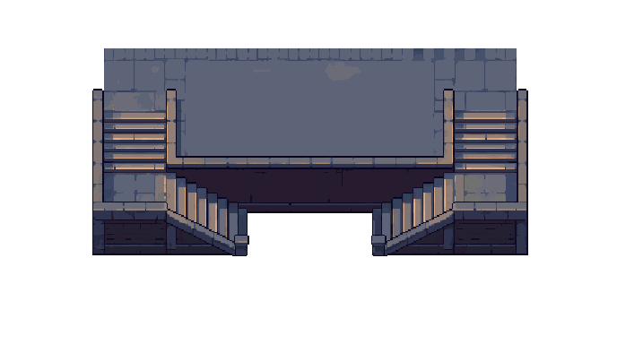
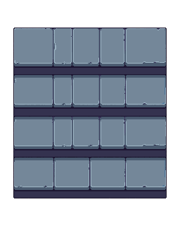

SEVERENCE · 30 SET 2026 · ESTUDOS PROVISÓRIOS
Pequeno lote gerado no PixelLab e inspecionado. A bancada abaixo compara materiais e sprites reais sem substituir a validação no jogo. Nenhuma peça está no catálogo publicável.
O exportador chama o tile de 64, mas entrega canvas 102 × 124 com padding. O piso visível mede 64 × 48. Preservar pixels e recortar a região correta; esticar para 64 × 64 deformaria a perspectiva.
Renderização de revisão, fora do jogo: piso 64 × 48 repetido, parede sul na região original e Marty/Titan reais. Altura do muro gerado não equivale aos 44 do Farol. A escala 1,12 replica o tamanho visual atual dos personagens para comparação; o recorte de quadro não simula animação.
A geração herdou dois lances por lado e orientação norte/sul adicional. Material e transparência são úteis como referência; geometria não serve para o piloto baixo. Não aplicar sobre o mapa.

A tentativa sem referência terminou, mas manteve faixas horizontais sugerindo subida norte/sul. Não entregou volume lateral nem comprovou o desnível 44. Nenhuma nova geração foi encomendada.

Conjunto físico: 1200 × 360; patamar: 800 × 360; duas rampas: 200 × 360; desnível: 44. Proposta: quatro pisos de 50 e quatro espelhos de 11, com iluminação autorada para os dois sentidos. A simulação atual é contínua. A conexão norte deve ficar livre.
Geometria provisória · Prompts e origem · Dimensões, alpha e hashes · Metadados do fornecedor · Proposta de camadas v1 · Auditoria de recortes · Baseline consultada